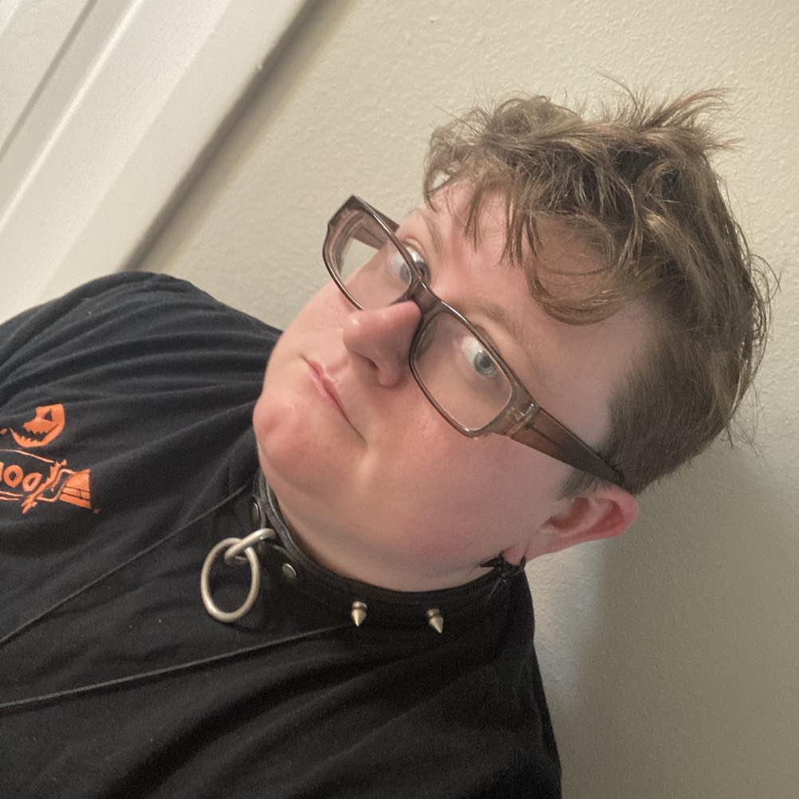

Hi I'm Amber Sellers
I graduated at Valencia College in 2022 with a Associates in graphic design and interactive design.
currently in school at F.I.R.S.T Institute for a graphic design and web development Diploma.
I love graphic design and frontend development because its fun seeing projects go from planning to finished pieces. I have about 3 years of experience under my belt.